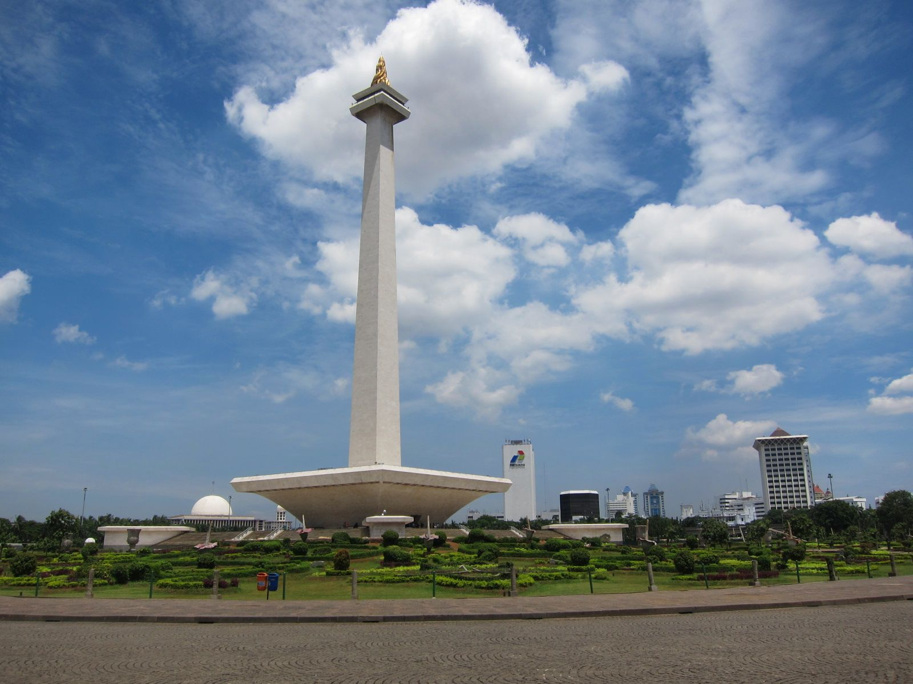

Aplikasi Android

Destination
Monas, Jakarta
Monumen Nasional atau yang populer disingkat dengan Monas atau Tugu Monas adalah monumen peringatan setinggi 132
meter yang didirikan untuk mengenang perlawanan dan perjuangan rakyat Indonesia untuk merebut kemerdekaan dari
pemerintahan kolonial Hindia Belanda.